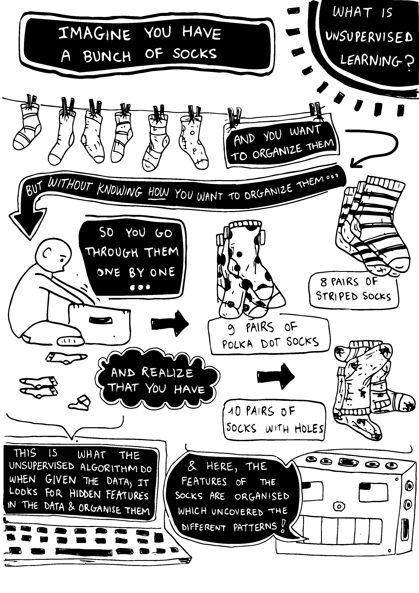
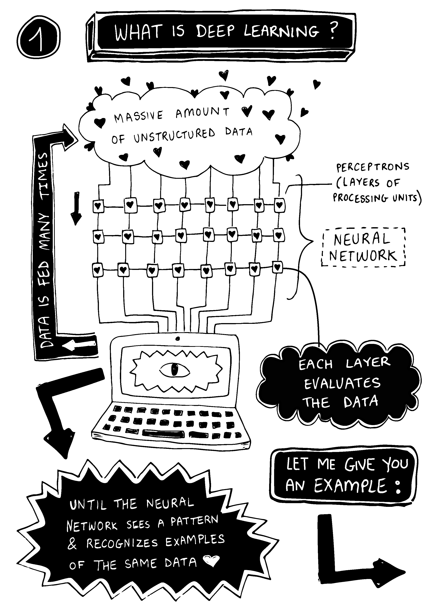

Several pages from both the black & white and coloured versions of the zine (above)
The Basics of Machine Learning: As Understood by Me a Non-Expert Who Likes Techy Stuff
‘The Basics of Machine Learning: As Understood by Me a Non-Expert Who Likes Techy Stuff’ is a zine breaking down complex concepts in Machine Learning for the everyday user. In order to understand concepts better, we have used socks as examples to define the differences between techniques.
Technical concepts in programming are often presented using technical jargon and in a non-engaging way.
Our aim is to introduce these concepts to an everyday audience to make complex concepts accessible in a fun, engaging way.
Roles:
Publication Design
Illustration
Writing